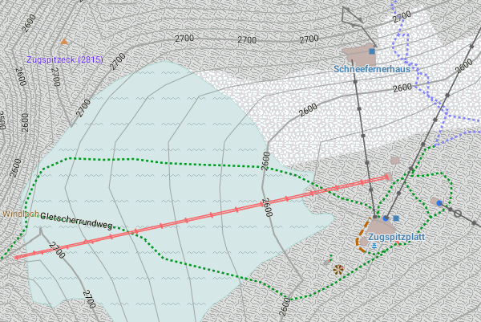

Unterstütze dieses Kartenprojekt:
Wenn du aus den Freizeitkarten etwas Positives für dich ableiten konntest, dann denke doch einmal über eine kleine Unterstützung nach. Betrachte dies nicht als Kommerzialisierung, sondern eher wie eine Einladung zu einer "Tasse Tee und einem Stück Kuchen".
Spendenmöglichkeit durch Überweisung auf ein deutsches Bankkonto:
Kontoinhaber: Klaus Tockloth
Kreditinstitut: Volksbank Münster eG
BIC: GENODEM1MSC
IBAN: DE48401600501701199600
Spendenmöglichkeit durch Geldtransfer via PayPal:
Danke für deine Unterstützung - du hilfst hierdurch mit, das Kartenprojekt fortzuführen.
An der Ausarbeitung der Freizeitkarten arbeiten aktiv mit:
- Stephan Brugger (Design fzk-outdoor-contrast)
- Patrik Brunner (Internationalisierung, Server-Administration)
- Jens Gruhlke (Build-Management)
- Christian Kraemer (Server-Administration)
- Klaus Tockloth (Entwicklung)
Neuigkeiten zum Kartenprojekt:
Hier gibt es Informationen zu den Freizeitkarten ... meist Hinweise zur Veröffentlichung neuer Kartenausgaben.
@freizeitkarte folgen
Hinweis für Programm-/App-Entwickler:
Alle Karten und Themes werden zusätzlich in einem programmtechnisch auswertbarem Repository aufgeführt.
Hierdurch können z.B. Downloads direkt in die App integriert werden.
Link: XML-Repository

Die Zugspitze - Deutschlands höchster Gipfel.
Angaben gemäß § 5 TMG:
Klaus Tockloth, Im Seihof 34
D-48161 Münster, Germany
eMail: freizeitkarte@googlemail.com
Haftung für Inhalte:
Die Inhalte unserer Seiten wurden mit größter Sorgfalt erstellt. Für die Richtigkeit, Vollständigkeit und Aktualität der Inhalte können wir jedoch keine Gewähr übernehmen. Als Diensteanbieter sind wir gemäß § 7 Abs.1 TMG für eigene Inhalte auf diesen Seiten nach den allgemeinen Gesetzen verantwortlich. Nach §§ 8 bis 10 TMG sind wir als Diensteanbieter jedoch nicht verpflichtet, übermittelte oder gespeicherte fremde Informationen zu überwachen oder nach Umständen zu forschen, die auf eine rechtswidrige Tätigkeit hinweisen. Verpflichtungen zur Entfernung oder Sperrung der Nutzung von Informationen nach den allgemeinen Gesetzen bleiben hiervon unberührt. Eine diesbezügliche Haftung ist jedoch erst ab dem Zeitpunkt der Kenntnis einer konkreten Rechtsverletzung möglich. Bei Bekanntwerden von entsprechenden Rechtsverletzungen werden wir diese Inhalte umgehend entfernen.
Haftung für Links:
Unser Angebot enthält Links zu externen Webseiten Dritter, auf deren Inhalte wir keinen Einfluss haben. Deshalb können wir für diese fremden Inhalte auch keine Gewähr übernehmen. Für die Inhalte der verlinkten Seiten ist stets der jeweilige Anbieter oder Betreiber der Seiten verantwortlich. Die verlinkten Seiten wurden zum Zeitpunkt der Verlinkung auf mögliche Rechtsverstöße überprüft. Rechtswidrige Inhalte waren zum Zeitpunkt der Verlinkung nicht erkennbar. Eine permanente inhaltliche Kontrolle der verlinkten Seiten ist jedoch ohne konkrete Anhaltspunkte einer Rechtsverletzung nicht zumutbar. Bei Bekanntwerden von Rechtsverletzungen werden wir derartige Links umgehend entfernen.
Urheberrecht:
Die durch die Seitenbetreiber erstellten Inhalte und Werke auf diesen Seiten unterliegen dem deutschen Urheberrecht. Die Vervielfältigung, Bearbeitung, Verbreitung und jede Art der Verwertung außerhalb der Grenzen des Urheberrechtes bedürfen der schriftlichen Zustimmung des jeweiligen Autors bzw. Erstellers. Downloads und Kopien dieser Seite sind nur für den privaten, nicht kommerziellen Gebrauch gestattet. Soweit die Inhalte auf dieser Seite nicht vom Betreiber erstellt wurden, werden die Urheberrechte Dritter beachtet. Insbesondere werden Inhalte Dritter als solche gekennzeichnet. Sollten Sie trotzdem auf eine Urheberrechtsverletzung aufmerksam werden, bitten wir um einen entsprechenden Hinweis. Bei Bekanntwerden von Rechtsverletzungen werden wir derartige Inhalte umgehend entfernen.
Datenschutz:
Die Betreiber dieser Webseiten nehmen den Schutz Ihrer persönlichen Daten sehr ernst.
Die Nutzung dieser Webseiten ist ohne die Angabe von personenbezogenen Daten uneingeschränkt möglich.
Es werden keinerlei personenbezogenen Daten erhoben, gespeichert oder weitergeleitet.
Wir weisen darauf hin, dass die Datenübertragung im Internet (z.B. bei der Kommunikation per E-Mail) Sicherheitslücken aufweisen kann.
Ein lückenloser Schutz der Daten vor dem Zugriff durch Dritte ist nicht möglich.
Kontaktdaten:
Der Nutzung von im Rahmen der Impressumspflicht veröffentlichten Kontaktdaten durch Dritte zur Übersendung
von nicht ausdrücklich angeforderter Werbung und Informationsmaterialien wird hiermit ausdrücklich widersprochen.
Die Betreiber der Seiten behalten sich ausdrücklich rechtliche Schritte im Falle der unverlangten Zusendung von Werbeinformationen,
etwa durch Spam-Mails, vor.
Cookies:
Diese Webseiten verwenden keine Cookies.
Server-Log-Files:
Im Rahmen des Betriebs dieser Webseiten erheben und speichern wir Informationen in sogenannten Server-Log-Files, die Ihr Browser automatisch an uns übermittelt.
Dies sind:
- Browsertyp / Browserversion
- verwendetes Betriebssystem
- Referrer URL
- Hostname des zugreifenden Rechners
- Uhrzeit der Serveranfrage
Diese Daten sind nicht bestimmten Personen zuordenbar.
Eine Zusammenführung dieser Daten mit anderen Datenquellen wird nicht vorgenommen.
Wir behalten uns vor, diese Daten nachträglich zu prüfen, wenn uns konkrete Anhaltspunkte für eine rechtswidrige Nutzung bekannt werden.
Die Rurtalsperre in der Eifel - ein beliebtes Ausflugs- und Wanderziel.
Nutzung des Kartenmaterials:
Die Nutzung des Kartenmaterials erfolgt auf eigene Gefahr. Das Kartenmaterial und oder das Routing kann Fehler enthalten oder unzureichend sein.
Die Ersteller dieser Karten übernehmen keinerlei Gewährleistung oder Haftung für Schäden die direkt oder indirekt durch die Nutzung des Kartenmaterials entstehen.
Lizenzbedingungen des Kartendaten:
Map data © OpenStreetMap contributors (ODbL).
Die dargestellten Kartenobjekte basieren auf den Daten des OpenStreetMap-Projektes.
OpenStreetMap ist eine freie, editierbare Karte der gesamten Welt, die von Menschen wie dir erstellt wird.
OpenStreetMap ermöglicht es geographische Daten gemeinschaftlich von überall auf der Welt anzuschauen und zu bearbeiten.
Link: http://www.openstreetmap.org/
Lizenz: http://www.openstreetmap.org/copyright/en
Lizenzbedingungen der Höhenlinien:
Contour data © U.S. Geological Survey (public domain).
Die Höhenlinien basieren teilweise auf Daten von U.S. Geological Survey.
Link: http://dds.cr.usgs.gov/srtm/version2_1/SRTM3
Lizenz: http://eros.usgs.gov/#/About_Us/Customer_Service/Data_Citation
Contour data © J. de Ferranti (free for research and private use).
Die Höhenlinien basieren teilweise auf Daten von Jonathan de Ferranti.
Link: http://www.viewfinderpanoramas.org/dem3.html
Lizenz: http://www.viewfinderpanoramas.org/dem3/
Lizenzbedingungen der Karten:
Produced map © FZK project (free for research and private use).
Die hier verfügbaren Karten stellen ein aus den Karten- und Höhendaten abgeleitetes Werk (produced work) dar.
Die Karten können für private oder wissenschaftliche Zwecke frei (uneingeschränkt) genutzt werden.
Bereitstellung der OpenStreetMap-Kartendaten:
Tagesaktuelle länder- und regionsspezifische Extrakte der OSM-Datenbankdaten werden uns durch die Firma Geofabrik GmbH (Karlsruhe) zur Verfügung gestellt.
Link: http://www.geofabrik.de
Erstellung der Karten:
Alle Karten wurden mit den Tools "osmfilter, osmconvert" und "MapsForge MapWriter" erstellt.
Link: http://wiki.openstreetmap.org/wiki/DE:Osmfilter
Link: http://wiki.openstreetmap.org/wiki/DE:Osmconvert
Link: http://code.google.com/p/mapsforge/
Lizenz: 100% free and open source (LGPL3 license)
Erstellung der Höhenlinien:
Die Höhenlinien wurden mit dem Tool "phyghtmap" erstellt.
Link: http://katze.tfiu.de/projects/phyghtmap/
Lizenz: http://gnu.org/licenses/gpl.html
Markenzeichen:
Mac OS® is a registered trademark of Apple Inc. (http://www.apple.com).
Windows® is a registered trademark of Microsoft Corp. (http://www.microsoft.com).
Bildnachweis:
Die Übersicht-/Reliefkarten wurden mit QGIS erstellt und basieren auf den Daten von "Natural Earth" (http://www.naturalearthdata.com).
Android-Apps:
Die Apps "Locus Map Free" und "Locus Map Pro" sind Programme von Asamm Software, s. r. o., Prag (http://www.locusmap.eu).
Die Apps "OruxMaps" und "OruxMaps Donate" sind Programme von Jose Vasquez, Madrid (http://www.oruxmaps.com).
Hinweis auf weitere Unterlagen:
Die Beschreibung der Kartenelemente in den Legenden erfolgte in Anlehnung an die Definitionen unter:
http://wiki.openstreetmap.org/wiki/DE:Map_Features
Die Beschreibung einiger Routingeigenschaften erfolgte in Anlehnung an die Definitionen unter:
http://wiki.openstreetmap.org/wiki/Mkgmap/help/style_rules